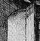

The happiness of seizing one of these tall barriers to a room by the porcelain knob of its belly; this quick hand-to-hand, during which progress slows for a moment, your eye opens up and your whole body adapts to its new apartment.
— Francis Ponge (1899–1988), Les plaisirs de la porte

When is a door not a door? It might be a rope-bridge or a ladder,
for instance. Inform provides doors for any situation in which some
game object is intermediate between one place and another, and
might on occasion become a barrier. Doors have a good deal in
common with containers, in that they need to be open to allow access and
to this end can also have openable, lockable
or locked. Just as with containers, any key they have
should be stored in the with_key property. The same
actions Open, Close, Lock
and Unlock all apply to doors just as they apply to
containers. There are four steps in creating a new door:
door attribute;door_to property to the location on
the other side;door_dir property to the direction which
that would be, such as n_to;For example, here is a closed and locked door, blocking the way into the ‘Ruins’ Shrine:
Object Corridor "Stooped Corridor"
with description "A low, square-cut corridor, running north to south,
stooping you over.",
n_to Square_Chamber,
s_to StoneDoor;
Object -> StoneDoor "stone door"
with description "It's just a big stone door.",
name 'door' 'massive' 'big' 'stone' 'yellow',
when_closed "Passage south is barred by a massive door of
yellow stone.",
when_open "The great yellow stone door to the south is open.",
door_to Shrine,
door_dir s_to,
with_key stone_key
has static door openable lockable locked;
Note that the door is static –
otherwise the player could pick it up and walk away with it.
(Experienced play-testers of Inform games try this every time,
and usually come away with a door or two.) The properties when_closed
and when_open give descriptions appropriate for the door
in these two states.
A door is ordinarily only present on one side of
a map connection. If a door needs to be accessible, say openable or
lockable, from either side, then the standard trick is to make it
present in both locations using found_in and to fix the
door_to and door_dir to be the right way
round for whichever side the player is on. Here, then, is a two-way door:
Object -> StoneDoor "stone door"
with description "It's just a big stone door.",
name 'door' 'massive' 'big' 'stone' 'yellow',
when_closed "The passage is barred by a massive door
of yellow stone.",
when_open "The great yellow stone door is open.",
door_to [;
if (self in Corridor) return Shrine; return Corridor;
],
door_dir [;
if (self in Shrine) return n_to; return s_to;
],
with_key stone_key,
found_in Corridor Shrine,
has static door openable lockable locked;
where Corridor has s_to set
to StoneDoor, and Shrine has n_to
set to StoneDoor. The door can now be opened, closed, entered,
locked or unlocked from either side. We could also make when_open
and when_closed into routines to print different descriptions
of the door on each side.
· · · · ·
Puzzles more interesting than lock-and-key involve writing some code to intervene when the player tries to pass through. The interactive fiction literature has no shortage of doors which only a player with no possessions can pass through, for instance.
Care is required here because two different actions
can make the player pass through the door. In the Corridor above,
the player might type “s” or “go south”,
causing the action Go s_obj. Or might “enter
stone door” or “go through door”, causing Enter
StoneDoor. Provided the door is actually open,
the Enter
action then looks at the door's door_dir property, finds
that the door faces south and generates the action Go s_obj.
Thus, provided that the door is open, the outcome is the
same and you need only write code to trap the Go action.
A neater alternative is to make the door_to
property a routine. If a door_to routine returns false
instead of a room, then the player is told that the door “leads
nowhere”, like the broken bridge of Avignon. If door_to
returns true, then the library stops the action on the
assumption that something has happened and the player has been told
already.
•
EXERCISE 20
Create a plank bridge across a chasm, which collapses if the player
walks across it while carrying anything.
•
EXERCISE 21
Create a locked door which turns out to be an immaterial illusion
only when the player tries to walk through it in blind faith.
• REFERENCES
‘Advent’ is especially rich in two-way doors: the steel
grate in the streambed, two bridges (one of crystal, the other of rickety
wood) and a door with rusty hinges. See also the iron gate in
‘Balances’.
•The library extension "doors.h"
by L. Ross Raszewski defines a class called Connector of
two-way doors, which are slotted automatically into the map for convenience.
Max Kalus's further extension "doors2.h" enables
such doors to respond to, say, “the north door” from one
side and “the south door” from the other.